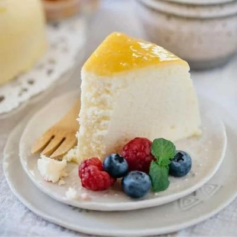

Cheesecake: Japanese Style
Back to Recipes

I know what you're thinking. What exactly is Japanese cheesecake? We'll, it's
similar to regular cheesecake, but this has a cotton-like fluffy texture that was
made famous in Japan. Now, less chatting. More baking!
Ingredients
- 5 large eggs, room temperature/li>
- 1/4 tsp cream of tarter
- 1/2 cup sugar, divided
- 8 oz cream cheese, room temperature
- 1/2 cup low-fat milk
- 1/4 cup unsalted butter, room temperature
- 1 Tbsp lemon juice
- 1/4 cup all purpose flour
- 2 Tbsp corn starch
- 8 inch round springform pan
Time to Cook
- Line the bottom and side of the springform pan with parchment paper. Wrap
the springform pan with several sheets of foil, sealing it completely.
- Fill a large baking pan halfway with water. Place it in the oven on the lowest
rack. Preheat the oven to 315 F (157 C).
- Separate the eggs and place the egg whites into a mixing bowl and the yolks
into a measuring cup.
- Beat the egg whites on Low speed for 30 seconds. Increase the speed to Medium
Low and beat for another 30 seconds or until foamy. Add the cream of tartar.
Increase the speed to Medium High and beat until the egg whites just start to
thicken. Add 1/4 cup sugar gradually. Continue beating until the egg whites reach
the soft peaks stage (approximately 3 minutes using a stand mixer).
- In a separate bowl, add the cream cheese and milk. Mix on Low speed until creamy
and smooth (approximately 2-3 minutes). Add the butter, remaining 1/4 cup sugar
and lemon juice and beat for 1 minute. Add the flour and corn starch and mix for
another minute. Finally add the egg yolks and mix for 1 more minute. Strain the
batter using a sieve.
- Add 1/3 of the egg whites and gently fold into the batter until mostly incorporated.
Add another 1/3 and gently fold. Add the remaining 1/3 and gently fold.
- Pour the batter into the lined springform pan. Spread the batter evenly into the
pan and smooth out the top using a spatula. Holding the side of the pan, gently lift
and drop the pan on the counter about 6 times to remove any big air bubbles.
- Place the springform pan into the water bath and bake the cake for 1 hour and 10
minutes. Check the cake for doneness by inserting a toothpick into the center of the
cake. (It should come out clean.) Bake the cake for an additional 10-15 minutes to
brown the top.
- Turn off the oven, open the oven door slightly (about 2-3 inches) and let the cheesecake
cool in the oven for 1 hour.
- Remove the Cotton Cheesecake from the pan. Place on a plate and refrigerate for at least 4 hours.
- Top with fresh fruit, fruit puree, chocolate sauce, whipped cream, etc.
- Cut a slice (or two) turn on your favorite slice of life anime, kick up your feet,
and enjoy :)
Original Recipe
Back to top of page